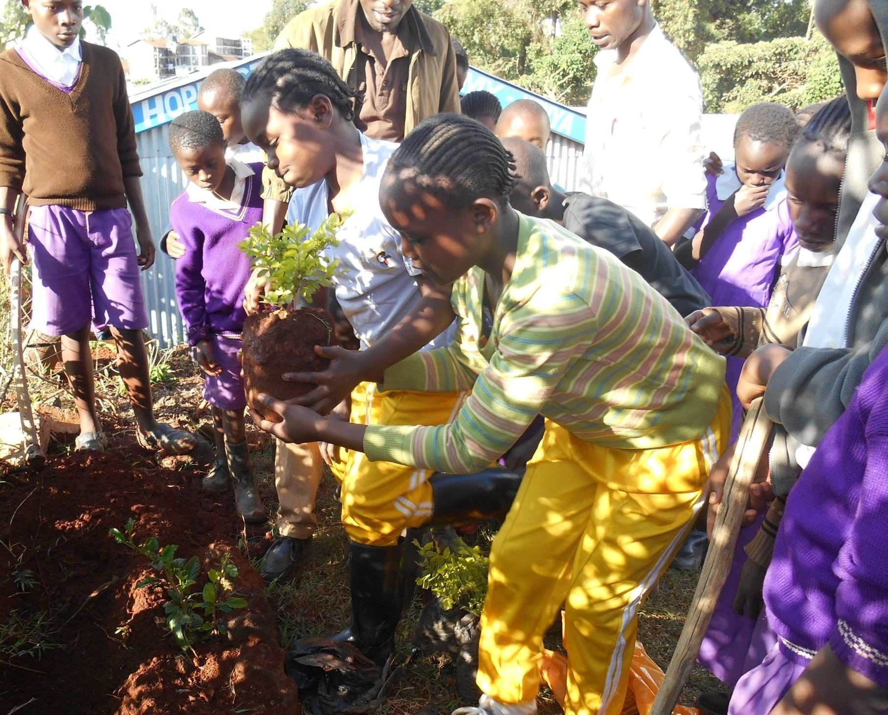
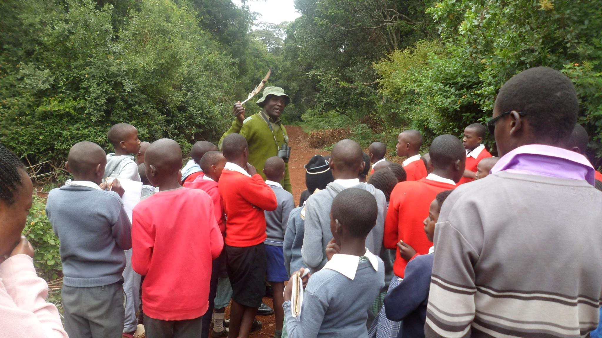

Why Green Schools Matter
Why We Must Act Now
Climate change isn't a distant threat; it's the most pressing
challenge of our time. Its effects are visible in our communities, and
the responsibility to act falls on all of us. But we believe the most
powerful change begins in the classroom.
The Green Schools Dagoretti Project is built on one simple truth: we don't just teach about the environment; we live it.
A green school is more than just a building. It's a living ecosystem that actively reduces its environmental footprint, conserves precious resources, and nurtures a new generation of eco-conscious leaders. From the simple act of a child planting a tree to the community-wide effort to recycle waste, every step we take together shapes a greener, more hopeful tomorrow.
Student-Led Innovations
- Eco Clubs: Formed by students to organize green campaigns and eco-challenges.
- Composting Initiatives: Turning food waste into valuable soil nutrients for school gardens.
- Green Art Projects: Using recycled materials to create powerful messages of hope and action.
We believe students are not just participants, but leaders in sustainability. Join a project or propose your own!

Ready to Make an Impact?
Whether you’re a student planting your first seed, a teacher leading the next recycling challenge, or a volunteer dreaming of greener communities — your journey starts here.
Let's build a future we can all be proud of.
Contact Us
For inquiries, partnership opportunities, or to learn more about Green Schools Dagoretti, please reach out to us:
- Email: greenschoolsdagoretti@gmail.com
- Phone: +254 724 344 344